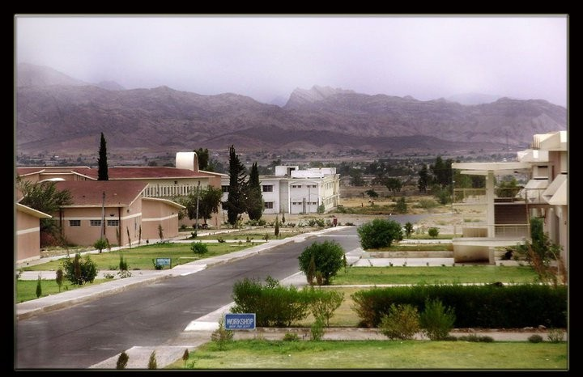
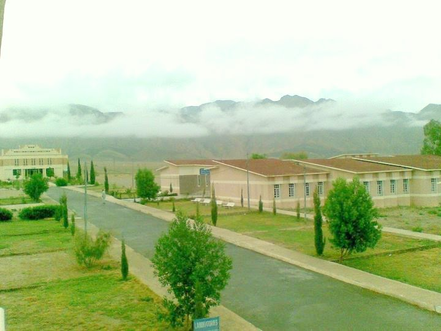
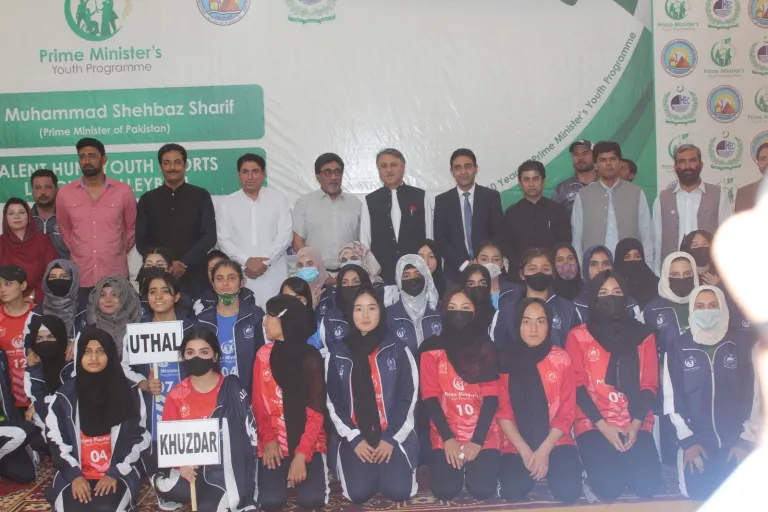

Learn
Build strong foundations through academic learning and practical exposure.
A modern digital experience concept for Balochistan University of Engineering and Technology, Khuzdar — designed with students, innovation and mobile-first access in mind.
Learn. Build. Lead.
Balochistan University of Engineering and Technology, Khuzdar is an engineering and technology institution serving students in Balochistan and beyond.
This student-built landing page presents the university through a clean, responsive interface that can work as a website foundation or a front-end shell for a future mobile application.
Visit official website ↗Build strong foundations through academic learning and practical exposure.
Turn engineering, computing and technology ideas into useful solutions.
Develop the confidence and skills to contribute locally and globally.
Create a digital-first campus experience for students and communities.
Explore disciplines across engineering, computing, sciences and technology. The cards below are a visual showcase for this static project.
Civil • Electrical • Mechanical • Energy • Electronics & more
Computing, software and digital systems.
Master-level computing study and research.
A platform for ideas, experimentation and impact.
Real campus and university imagery adds a stronger connection to Khuzdar and makes the landing page feel authentic on both desktop and mobile.



Balochistan University of Engineering and Technology, Khuzdar is located in the distinctive landscape of Balochistan, providing a unique environment for engineering, computing, science and technology education.
This section personalizes the project while keeping the university landing page clean and presentation-ready.
MSCS • Roll # 26MSCS02
For official university information, admissions and institutional updates, use the official BUET Khuzdar website.
Official BUET Website ↗